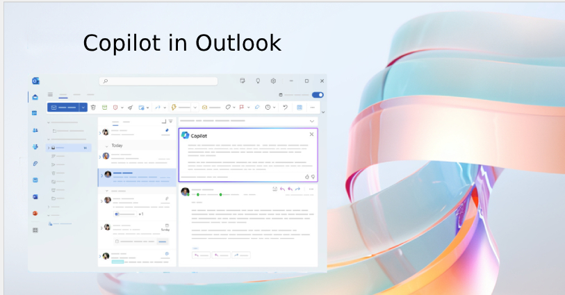
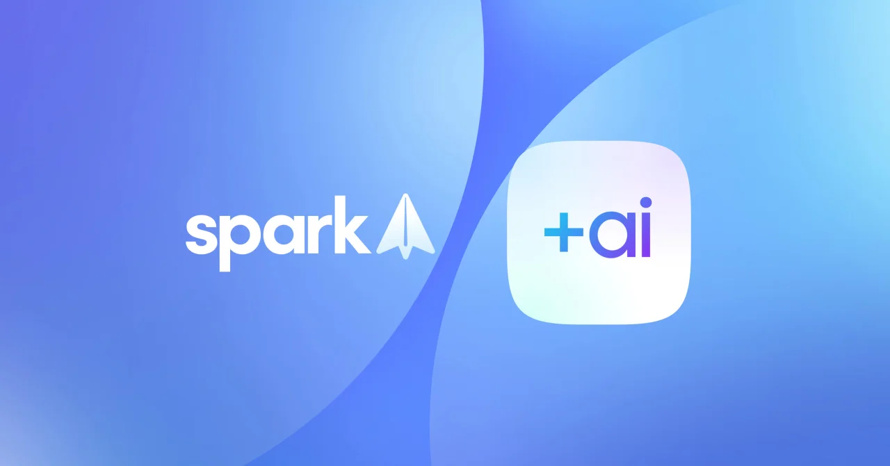

AI Email Integration
Leveraging the Capabilities of Artificial Intelligence for Email Client Integration: A Comprehensive Guide for Traditional IT Organizations
Researcher: 100582619
Introduction to AI Email Integration
- The landscape of digital communication is in a state of constant evolution, and the integration of AI into email workflows can bring about a transformative change for businesses, augmenting efficiency, productivity, and customer engagement.
- This guide underscores the critical importance of AI integration with email clients and provides extensive guidelines, examples, solutions, and recommendations for incumbent businesses.
- The emphasis is on adopting a human-centric approach to the implementation and evaluation of AI's impact on daily applications.

Significance of AI Integration with Email Clients
AI technologies such as Natural Language Processing (NLP) and Machine Learning (ML) can automate email categorisation, generate personalised responses, and provide predictive analytics, thereby significantly enhancing productivity.
Challenges for Traditional IT Organizations
Traditional IT organizations encounter unique challenges when adopting AI-powered email solutions, including technological barriers, organizational resistance, skill gaps among personnel, and concerns about data privacy and security.

Practical Tips for AI Integration on client email
- Human-Centric Approach to AI Integration: Cultivate a culture of collaboration, trust, and continuous learning within the organization.
- Practical Guidelines for AI Integration:
- Evaluate Workflow: Identify issues, inefficiencies, or areas requiring improvement in email workflows.
- Define Objectives: Establish clear objectives and desired outcomes for integrating AI.
- Choose AI Technologies: Select suitable AI tools and technologies.
- Pilot Implementation: Initiate with a small-scale pilot implementation.
- Provide Training and Support: Offer comprehensive training programs and continuous support.
- Monitor and Evaluate: Continually assess the performance and impact of AI integration.
- Real-world examples underscore successful AI integrations across a variety of industries, serving as inspiring proof of best practices.
- Customised AI Models: Develop models that cater to the organization's unique requirements.
- Data Governance Policies: Implement robust policies to safeguard data privacy and security.
- Transparent Communication: Establish channels for feedback and collaboration.
- Integration with CRM: Integrate AI-powered email solutions with existing CRM platforms.
- Continuous Training: Provide upskilling programs to enable employees to work proficiently with AI-driven technologies.
- When evaluating AI-powered applications, consider their impact on productivity, user satisfaction, adaptability, and technical functionality.